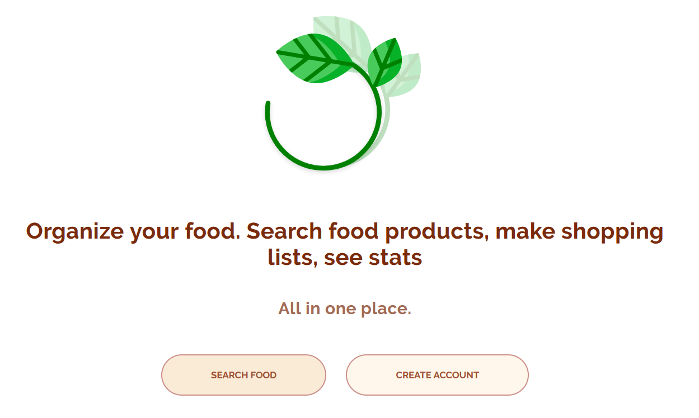

2. Pages
2.1. Home page
This is where it all starts. From here the user can navigate within the navigation bar (at the top of the screen):
Next: a nice logo, a brief introduction to our site and two action buttons:
2.2. Create account page
Also known as the register page, this page is where the user can create an account. It requires the first name, last name email, password and retyping the password again. After finishing, the user can press "Enter" on the keyboard or click the "Search" button.
If the user already has an account on this site, they can click on "Login here!", as the text already suggests that.
2.3. Login page
2.4. Search page
On this page, the user is expected to type in a name of a food product (e.g. "apple"):
The user can also filter the results using the options below the search bar:
After typing in (or choosing some filters), the user can press "Enter" on the keyboard, or click the "Search" button.
2.5. Search results
The results from the search action are displayed as a table. Each column is giving more information about the product.
That was an example of what appears when we type in "apple".
If you want to add one item from this table, click on "Add to your list", right at the end of the row.
2.6. Add to your shopping list
Here the user can select a quantity. By default this quantity is 1 and can be changed by using the arrows, or typing in a number.
The user will be notified onde the item is added. The statmement "Item Added!" will appear.
If no user is currently logged in, they will be redirected to the Login page.
2.7. Shopping List page
Here, the user can see their shopping list inside a table. If the user brought the item and wants to remove it from the list, they can click on the "Remove" button.
If the shopping list is empty, the page will suggest them to search for some items to add on the list.
2.8. Statistics page
On this page, the user will see what items are added the most. There will be dislayed the 7 most popular items for the current user.

The user can also export this data as a .CSV file by clicking on the "Export" button.